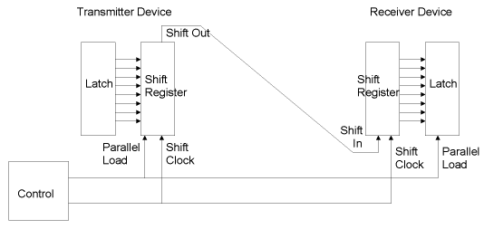
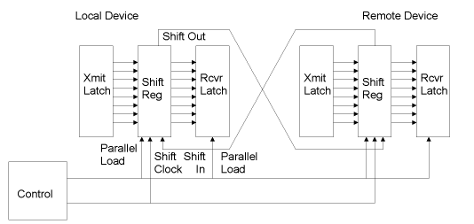
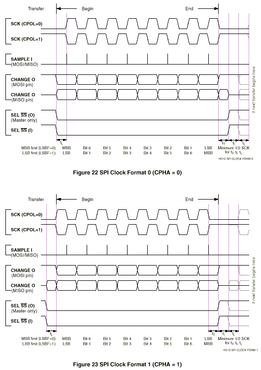
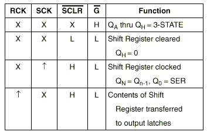
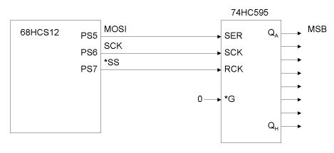
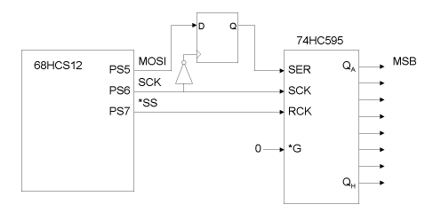
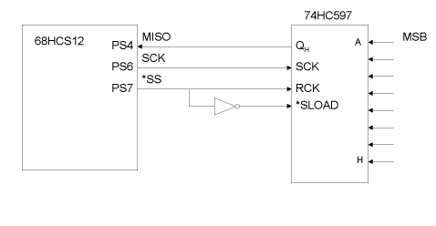
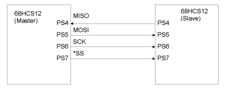
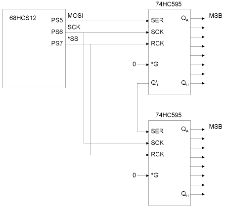
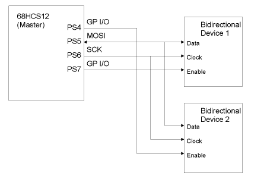

| Previous Section | Next Section | Index | Questions | Search the Text |
The Serial Peripheral Interface is similar to the Serial Communication Interface just discussed, in that it transfers bytes of data in a bit-serial fashion. However the SPI uses distributed clock signals - it's synchronous rather than asynchronous. It is also much simpler to use.
The basic design of a synchronous serial interface is shown in the figure, below.

Data held in a latch in the "transmitter device" is loaded into a shift register. A clock signal shifts the data out of the register and into a shift register at the "receiver device". When the data has been completely shifted into the receiver's register, the data is loaded into the receiver's data latch. The interface can be controlled at either the transmitter or receiver. Three wires are needed for serial data, shift clock, and parallel load.
The interface can be easily expanded so that data transfers in both directions by closing the data loop. At each device, there are two latches, one for transmitting, and the other for receiving.

The MC9S12DP256 contains three Serial Peripheral Interface modules, SPI0, SPI1, and SPI2, which operate identically. We will limit the discussion to SPI0, which connects on Port S. The two other SPIs connect on Port P, and share the same pins with the Pulse Width Modulator. The Serial Peripheral Interface consists of an 8 bit shift register that can both transmit and receive data. It can as the master, providing the control signals SCK, the serial shift clock on Port S pin 6, and *SS, the select (parallel load) signal on Port S pin 7. Or it can run as the slave, in which case SCK and *SS are input signals. Serial data is transferred on Port S pins 4, MISO, 5, MOSI. MISO is serial input for the master and serial output for the slave, while MOSI is serial output for the master and serial input for the slave. The SPI is very configurable. SCK can be positive going or negative going pulses, with the data shifted on either the rising or trailing edges of the pulse. The *SS signal can be used to load data into the shift registers on the negative edge, and load data into the latches on the positive edge. The various clocking schemes are shown in these figures taken from Freescale SPI Block Users Guide.

CPHA=1 has an initial SCK clock edge to have the data available. This is useful for bidirectional operation. Both SCK edges are used, alternating sampling the input and updating the output. CPOL determines the initial SCK value. For most applications CPHA=0 and CPOL=1 to shift on the rising edge of SCK.
Let's consider an example of use, connecting the HCS12 SPI to a 74HC595 8-bit shift register with parallel output. This part converts a serial input to parallel output, so we can use it as an output peripheral device. The truth table for the part is:

We need a rising edge on RCK at the end of shifting to transfer the data from the shift register to the parallel output latches. We can use the *SS signal from the 68HCS12 directly for this. The shift register is clocked on the rising edge of SCK. From the timing charts, above, we will use CPOL=1 and CPHA=0. The partial schematic of the circuit is:

Note that the 74HC595 shifts on the same SCK edge as it samples input. This can cause potential setup or hold problems if the part is remote and there is sufficiently different propagation delays between SCK and MOSI. One solution to the problem is to add a flip-flop to the input that captures on the opposite SCK edge. This will give roughly half an SCK period of setup and hold which can be increased by lowering the SPI clock frequency.

With the connections shown, the 74HC595 shifts from most significant to least significant bit position. That means we want the 68HCS12 to shift least significant bit first, LSBFE=1.
The following registers are used for the serial port. Registers SPI0CR1 and SPI0CR2 are control registers. SPI0BR is a control register that sets the serial data bit rate clock. SPI0SR is the status register. SPI0DR is the bidirectional data register. SPI0 connects to port S. Here are the control and status register bit definitions:
| Register | Bit 7 | Bit 6 | Bit 5 | Bit 4 | Bit 3 | Bit 2 | Bit 1 | Bit 0 |
|---|---|---|---|---|---|---|---|---|
| SPI0CR1 | SPIE | SPE | SPTIE | MSTR | CPOL | CPHA | SSOE | LSBFE |
| SPI0CR2 | 0 | 0 | 0 | MODFEN | BIDIROE | 0 | SPISWAI | SPC0 |
| SPI0BR | 0 | SPPR2 | SPPR1 | SPPR0 | 0 | SPR2 | SPR1 | SPR0 |
| SPI0SR | SPIF | 0 | SPTEF | MODF | 0 | 0 | 0 | 0 |
All of the control bits are initialized to zero, except for CPHA. SPIE enables interrupts when status bits SPIF or MODF are set. SPE enables the SPI interface. SPTIE enables interrupts when status bit SPTEF is set. MSTR causes the SPI to run in master mode, driving *SS and SCK. CPOL and CPHA set the clocking mode, as shown in the timing diagrams, above. SSOE enables the *SS output when in master mode; MODFEN must be set as well to configure as output. LSBFE controls the shifting direction and is 1 to shift least significant first.
SPC0 enables bidirectional mode where the serial in and out share a single pin. BIDIROE enables output when in bidirectional mode. Use of this feature will be described under Three Wire Bidirectional Interface.
SPISWAI stops the SPI clock while executing a WAI instruction. SPI0BR sets the SPI baud rate divisor. The nominal 24MHz system clock is divided by this value to generate the SPI SCK clock. The divisor is calculated as (SPPR+1)*2(SPR+1). The minimum divisor selected should be 4 to achieve reliable operation.
The following configuration will allow operation of our 74HC595 with a SCK frequency of 1MHz, in polled mode:
movb #$53 SPI0CR1 ; set SPE MSTR SSOE and LSBFE
movb #$10 SPI0CR2 ; Set MODFEN
movb #$51 SPI0BR ; 1MHz clock SPPR=5, SPR=1 for divide by 6
; and then by 4
In master mode, reading SPI0SR while SPTEF is set and then writing to SPI0DR causes the data to be shifted out (and outside data to be shifted in). Both receiver full (SPIF) and transmitter empty (SPTEF) interrupt flags are available and either or both can be used to request an interrupt. Note that because of hardware buffering, the transmitter buffer will be empty before the received data is available, so the received data cannot be read until SPIF is set. SPIF is cleared by reading SPI0SR while SPIF is set, and then reading SPI0DR. SPTEF is cleared by reading SPI0SR while SPTEF is set and then writing SPI0DR. MODF is set in the unusual case of being in master mode with *SS being configured as an input pin and being driven low.
The following code sequence can be used to write to the 74HC595:
p1: brclr SPI0SR #$20 p1 ; wait for SPTEF to be set
staa SPI0DR ; store data into SPI0DR, causing it to be output
The SPI can be connected to an input device, such as the 74HC597 which converts parallel data into serial suitable for the SPI.

The code sequence to read from the input device would be:
tst SPI0SR ; read status register
staa SPI0DR ; store starts data transfer
p1: brclr SPI0SR #$80 p1 ; wait for SPIF to be set
ldaa SPI0DR ; load data from SPI
The initial store into the SPI data register starts the data transfer.
The value stored is immaterial.
Using the SPI in an interrupt driven application is a straightforward extension of polling. The critical decision is whether to use SPIF or SPTEF to request the interrupt. If the SPI is being used only to transmit data, then the SPTEF flag should be used to get the highest effective data rate. If the SPI is being used to receive data then the SPIF flag must be used since received data is not available at the time the SPTEF flag bit is set.
Let us consider an example using the simulator. We will transmit bytes with consecutively incremented values to the simulated external SPI device. Designing for the simulated device configuration defaults, we will shift to the left on rising SCK edges. We need to interrupt when SPTEF is set. And we wish to run with a 1 MHz SCK clock. This requires the following configuration:
movb #$7A SPI0CR1 ; set SPE SPTIE MSTR CPOL SSOE movb #$10 SPI0CR2 ; set MODFEN movb #$51 SPI0BR ; 1MHz SPI clock.
We need to configure to use our interrupt service routine, spiisr. A byte variable, val, contains the next value to send. The interrupt service routine is invoked when SPTEF is set, so we need to read the SPI0SR register and write the next data byte to SPI0DR to clear the flag before returning from the interrupt routine:
spiisr:
ldaa SPI0SR ; read the status register so flag can be cleared
movb val SPI0DR ; send next byte, clears SPTEF
inc val ; increment val for next time
rti
The complete source code for the program is here and the program can be run from here.
We can have data communication between two microcontrollers by connecting them together using the SPIs on each. One microcontroller is designated as the master. The *SS, CLK, MOSI, and MISO signals of each are connected to the other. When the master writes into its SPI0DR, the data byte in the master is transferred to the slave while the byte in the slave is transferred to the master.

The master is configured with this code sequence:
movb #$52 SPI0CR1 ; set SPE MSTR SSOE
movb #$10 SPI0CR2 ; set MODFEN
movb #$20 SPI0BR ; 4 MHz SPI clock
tst SPI0SR ; read status register
The slave is configured with this code sequence:
movb #$40 SPI0CR1 ; set SPE
movb #$0 SPI0CR2 ;
The master executes the following code sequence to perform the data exchange:
staa SPI0DR ; store output data and start shifting
p2: brclr SPI0SR #$80 p2 ; wait for completion (receiver full)
ldaa SPI0DR ; load data shifted in from slave
The slave microcontroller loads its SPI0DR with the first byte to send in advance because the slave does not know when the data transfer will commence. The slave executes the following code sequence when it polls for data:
p3: brclr SPI0SR #$80 p3 ; Wait for data to transfer (receiver full)
staa SPI0DR ; Store next byte to send
ldaa SPI0DR ; Load data received (note - not the same as what was
; just stored into SPI0DR).
With a serial interface there is no limit to the number of devices that can be chained together. Consider interfacing the 68HCS12 with two 74HC595 shift registers. We could end up with the following schematic:

If 16 bits were to be shifted out of the 68HCS12, the first eight would end up in the lower 74HC595, while the last eight would end up in the upper 74HC595. We can send 8 bits at a time out of the 68HCS12; our problem is that *SS will be asserted for each group of eight bits, causing invalid data to be latched into the outputs of the 74HC595s for a short period of time.
We can solve the problem by explicitly controlling the *SS pin, rather than having the hardware control it. The following code can be used to initialize the microcontroller SPI and Port S:
movb #$51 SPI0CR1 ; set SPE MSTR and LSBFE
movb #$51 SPI0BR ; 1MHz clock
movb #$80 DDRS ; Port S pin 7 is output
bset PTS #$80 ; Set *SS high.
Because we did not set SSOE in SPI0CR1, we can drive the *SS pin by writing to the most significant bit of register PTS. We initialize it to the high state. The following code will write accumulator A to the upper 74HC595 and accumulator B to the lower 74HC595:
bclr PTS #$80 ; Set *SS low
tst SPI0SR ; read status register
stab SPI0DR ; store 1st byte into SPI0DR, causing it to be output
p4: brclr SPI0SR #$80 p4 ; wait for SPIF to be set
tst SPI0DR ; clear SPIF
staa SPI0DR ; store 2nd byte into SPI0DR, causing it to be output
p5: brclr SPI0SR #$80 p5 ; wait for SPIF to be set
tst SPI0DR ; clear SPIF
bset PTS #$80 ; Set *SS high
Why is SPIF checked and the SPI0DR register read (using the TST instruction) to clear SPIF? If SPTEF were used, *SS would be set high before the last data byte was completely sent. Using SPIF insures all the data is sent before *SS is set high.
Some devices use a three wire interface consisting of a bidirectional data line, shift clock, and enable. SPC0=1 to enable the bidirectional mode and the MOSI pin is used for data transfer when the microcontroller SPI is in master mode. CPHA=1 so that data is captured on the falling edge of the shift clock. The microcontroller sends a byte of data representing a command to the device. If the command is to read data from the device, the microcontroller changes its direction (BIDIROE=0) to input and the next 8 shift clocks the device will drive the data line and the microcontroller will capture the data. The device will start driving the data line with the leading edge of the clock, and as stated, the data is captured on the trailing edge of the clock. Only an enabled device will respond to the shift clock or drive the data line. Multiple devices can be connected with their enable lines driven by general purpose I/O pins instead of using *SS, as shown in the figure, below. Note that the *SS and MISO pins can be used as general purpose I/O when in bidirectional mode, so these pins can be used to enable two devices.

The following code segment will send a single byte "command" in accumulator A to Bidirectional Device 1 of the figure above. Then it will receive a single byte response from the device into accumulator B. Note that the device requires its Enable input to be high to shift data.
bset PTS #$80 ; set enable high
bset SPI0CR2 #$8 ; set BIDIROE high (transmit)
tst SPI0SR ; write to status register
staa SPI0DR ; store command into SPI0DR, sending it out
p6: brclr SPI0SR #$80 p6 ; wait for SPIF to be set
bclr SPI0CR2 #$8 ; set BIDIROE low (receive)
staa SPI0DR ; store to start receiving (value ignored)
p7: brclr SPI0SR #$80 p7 ; wait for SPIF to be set
ldab SPI0DR ; get data
bclr PTS #$80 ; set enable low
Continue with Inter Integrated Circuit Bus Interface
Return to the Index.